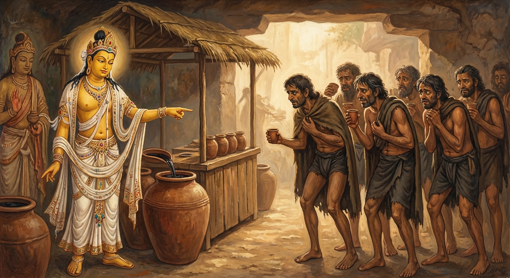

3. පුණ්ණපාති ජාතකය (53)
‘තථෙව පුණ්ණාපාතියො’ (සුරා බඳුන් එලෙසම පිරී ඇත) යන පදයෙන් ඇරඹෙන මේ ජාතක කතාව, බුදුරජාණන් වහන්සේ ජේතවනාරාමයේ වැඩවසන සමයේ විෂ යෙදූ මත්පැන් බඳුනක් අරබයා දේශනා කරන ලදී. එක් කලෙක සැවැත් නුවර ධූර්තයෝ (සුරා සොඬුන්) රැස්ව කුමන්ත්රණ කළහ. “අපගේ සුරා බිමට ඇති මුදල් අවසන් වී ඇත. දැන් අප ඒ සඳහා මුදල් සොයා ගන්නේ කෙසේද?” යි ඔවුහු කතිකා කළහ. එවිට එහි සිටි එක් කපටි ධූර්තයෙක් මෙසේ කීය. “ඒ ගැන නොසිතන්න, ඊට උපායක් ඇත.” “කවර උපායක් ද?” යි ඇසූ විට ඔහු මෙසේ පැවසීය. “අනේපිඬු මහසිටුතුමා අතේ ඇඟිලිවල මුදු පැළඳ, ඉතා වටිනා සිනිඳු වස්ත්ර ඇඳ රජු හමුවීමට යයි. අපි මත්පැන් බඳුනකට සිහි නැති කරවන බෙහෙතක් යොදා, අවන්හලක් සූදානම් කරගෙන හිඳිමු. සිටුතුමා එන වේලාවට ‘මහා සිටුතුමනි, මෙහෙන් එන්න’ යයි අඬගසා, ඔහුට එම මත්පැන් පොවා සිහි නැති වූ විට, ඔහුගේ ඇඟිලි මුදු සහ වස්ත්ර පැහැරගෙන අපගේ සුරා මුදල සොයා ගනිමු.” අනෙක් ධූර්තයෝ ද “එය යහපත් ය” යි එය පිළිගෙන, එසේ ම සූදානම් වී සිටුතුමා එන වේලෙහි පෙරමඟට ගොස් මෙසේ කීහ. “ස්වාමීනි, මඳක් මෙහි පැමිණෙන්න. අප ළඟ ඉතා මිහිරි මත්පැන් ඇත. මඳක් බී යන්න.” සෝවාන් ඵලයට පත් ආර්ය ශ්රාවකයෙක් වූ සිටුතුමා මත්පැන් බොන්නේ ද? (නොබොයි). ඔහුට මත්පැන්වල අවශ්යතාවක් නොතිබුණ ද, “මේ ධූර්තයන්ව අල්ලා ගනිමි” යි සිතා ඔවුන්ගේ මත්පැන් හලට ගොස්, ඔවුන්ගේ හැසිරීම බලා, “මේ මත්පැන් මොවුන් විසින් යම් කටයුත්තක් සඳහා යොදාගෙන සකසන ලද්දකි” යි දැන ගත්තේය. “මෙතැන් පටන් මොවුන් මෙයින් පලවා හරින්නෙමි” යි සිතා සිටුතුමා මෙසේ කීය. “එම්බා දුෂ්ට ධූර්තයෙනි, තොපි සුරා බඳුනට සිහි නැති කරවන බෙහෙත් යොදා, එන යන අයට පොවා, සිහිසුන් කර කොල්ලකෑම සඳහා අවන්හලක් සදාගෙන සිටින්නෙහු ය. තොපි හුදෙක් මේ මත්පැන් වර්ණනා කරනවා පමණි. තොපගෙන් එක් අයෙක් හෝ එය ඔසවා බීමට උත්සාහ නොකරයි. ඉදින් මේවාට බෙහෙත් නොයෙදුවේ නම්, තොපි ම මෙය බොනු ඇත.” මෙසේ එම ධූර්තයන් බිය ගන්වා එතැනින් පලවා හැර, තම නිවසට ගොස් “ධූර්තයන් විසින් කළ මේ දේ බුදුරජාණන් වහන්සේට දන්වමි” යි සිතා, ජේතවනයට ගොස් ඒ බව දැන්වීය. එවිට ශාස්තෘන් වහන්සේ, “ගෘහපතිය, දැන් පමණක් නොව පෙරත් නුවණැත්තන්ව වංචා කිරීමට මොවුන් කැමති වූහ” යි වදාරා, සිටුතුමා විසින් ආරාධනා කරන ලදුව අතීත කතාව ගෙනහැර දැක්වූ සේක.
අතීතයේ බරණැස් නුවර බ්රහ්මදත්ත රජු රාජ්යය කරන සමයේ, බෝධිසත්වයෝ බරණැස් සිටුව උපන්හ. එකල ද මේ ධූර්තයෝ එලෙසින්ම කුමන්ත්රණ කොට, මත්පැන්වලට විෂ යොදා, බරණැස් සිටුතුමා එන වේලාවේ පෙරමඟට ගොස් පෙර පරිදිම කීහ. සිටුතුමා මත්පැන් සඳහා කැමැත්තක් නැති වුව ද, ඔවුන්ව අල්ලා ගැනීමේ අදහසින් එතැනට ගොස්, ඔවුන්ගේ ක්රියාව දෙස බලා, “මොවුන් මේ සැරසෙන්නේ යම් දෙයක් කිරීමට ය, මොවුන්ව මෙතැනින් පලවා හරිමි” යි සිතා මෙසේ කීහ. “පින්වත් ධූර්තයෙනි, මත්පැන් බී රාජ සේවයට යෑම නුසුදුසු ය. රජතුමා දැක නැවත එන ගමනේ දී ඒ ගැන බලමු. තොපි මෙහිම වාඩි වී සිටින්න” යි කියා රජු හමුවීමට ගොස් නැවත පැමිණියේය. ධූර්තයෝ “හිමියනි, මෙහි එන්න” යයි කීහ. ඔහු ද එහි ගොස් බෙහෙත් යොදා සකසා තිබූ සුරා බඳුන් දෙස බලා මෙසේ කීවේය. “පින්වත් ධූර්තයෙනි, තොපගේ ක්රියාකලාපය මට රුචි නොවේ. තොපගේ සුරා බඳුන් පිරවූ පරිදිම එලෙසම තිබේ. තොපි හුදෙක් සුරාව වර්ණනා කරනවා මිස ඒවා නොබොන්නෙහු ය. ඉදින් මේවා මිහිරි නම්, තොපි ද මෙය බොනු ඇත. (එසේ නොකරන බැවින්) මේවා ඒකාන්තයෙන් ම විෂ මිශ්ර වූ ඒවා විය යුතු ය” යි පවසා ඔවුන්ගේ බලාපොරොත්තු බිඳ දමමින් මෙම ගාථාව කීවේය.
“සුරා බඳුන් (මා එනවිට තිබූ පරිද්දෙන් ම) එලෙසම පිරී පවතී. (එහෙත්) ඔබ කියන කතා ඊට වඩා වෙනස් ය (ක්රියාව හා නොගැලපේ). පවතින මේ ආකාරයෙන් (ඔබ මේවා නොබී සිටීමෙන්) මෙය යහපත් සුරාවක් නොවන බව මම දනිමි.”
එහි ‘තථෙව’ යන්නෙන් අදහස් වන්නේ, මා එන විට දුටු පරිදිම දැනුත් මේ සුරා බඳුන් ඒ ආකාරයෙන්ම පිරී පවතින බවයි. ‘අඤ්ඤායං වත්තතෙ කථා’ යනු, ඔබ මේ සුරාව වර්ණනා කරමින් කියන කතාව බොරුවකි; සත්යයෙන් තොර ය. ඉදින් මේ සුරාව සැබවින්ම මිහිරි වී නම්, ඔබත් මෙය පානය කළ යුතු ය. එසේ කළේ නම් සුරා බඳුන්වල අඩක්වත් අඩු විය යුතු ය. නමුත් ඔබගෙන් එකෙක්වත් සුරාව පානය කර නැත. ‘ආකාරණෙන ජානාමි’ යනු, එබැවින් මේ කාරණයෙන් (ඔබ නොබී සිටීමේ හේතුවෙන්) මම මෙය දනිමි යන්නයි. ‘න චායං භද්දිකා සුරා’ යනු, මේ සුරාව යහපත් එකක් නොවේ, මෙය විෂ යෙදූ එකක් විය යුතු බවයි. මෙසේ ධූර්තයන්ව නිග්රහ කොට, නැවත මෙවැන්නක් නොකරන ලෙස ඔවුන් බිය ගන්වා පිටත් කර හැරියේය. හෙතෙම දිවි ඇති තෙක් දානාදී පින්කම් කොට කම් වූ පරිදි මිය ගියේය.

ශාස්තෘන් වහන්සේ මේ ධර්ම දේශනාව ගෙනහැර දක්වා ජාතකය ගළපා වදාළ සේක. “එකල සිටි ධූර්තයන් ම දැන් සිටින ධූර්තයන් ය. එකල බරණැස් සිටුව සිටියේ මම ම වෙමි.”
තුන්වන පුණ්ණපාති ජාතක වර්ණනාවයි.